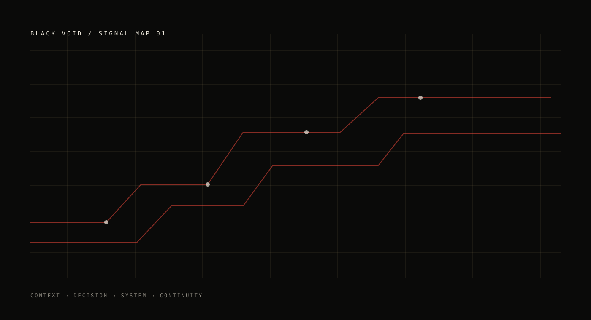

A camada que entende.
Agentes e assistentes para transformar intenção em execução.
AgentesMemóriaVisão
A Black Void conecta inteligência, produto, automação, infraestrutura e defesa em uma arquitetura que pode crescer sem multiplicar a fricção.
Uma operação madura não cresce adicionando ferramentas. Cresce aprendendo a fazer com que elas se escutem.
Não é uma lista de serviços. É uma relação entre camadas: cada módulo fica mais forte quando sabe onde o outro começa.

O futuro não chega como uma ferramenta. Chega como uma operação inteira.
BLACK VOID / NOTA DE ARQUIVOCada camada tem uma função. Juntas, elas formam uma operação menos fragmentada.
Agentes e assistentes para transformar intenção em execução.
Produtos digitais, sistemas e experiências que dão forma à estratégia.
Infraestrutura preparada para crescer, observar e se recuperar.
Defesa como prática contínua, não como etapa depois do incidente.